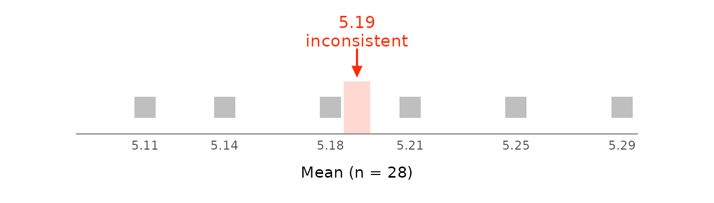
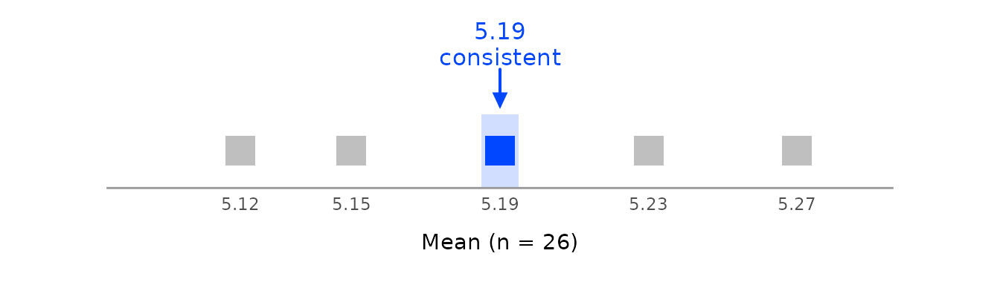
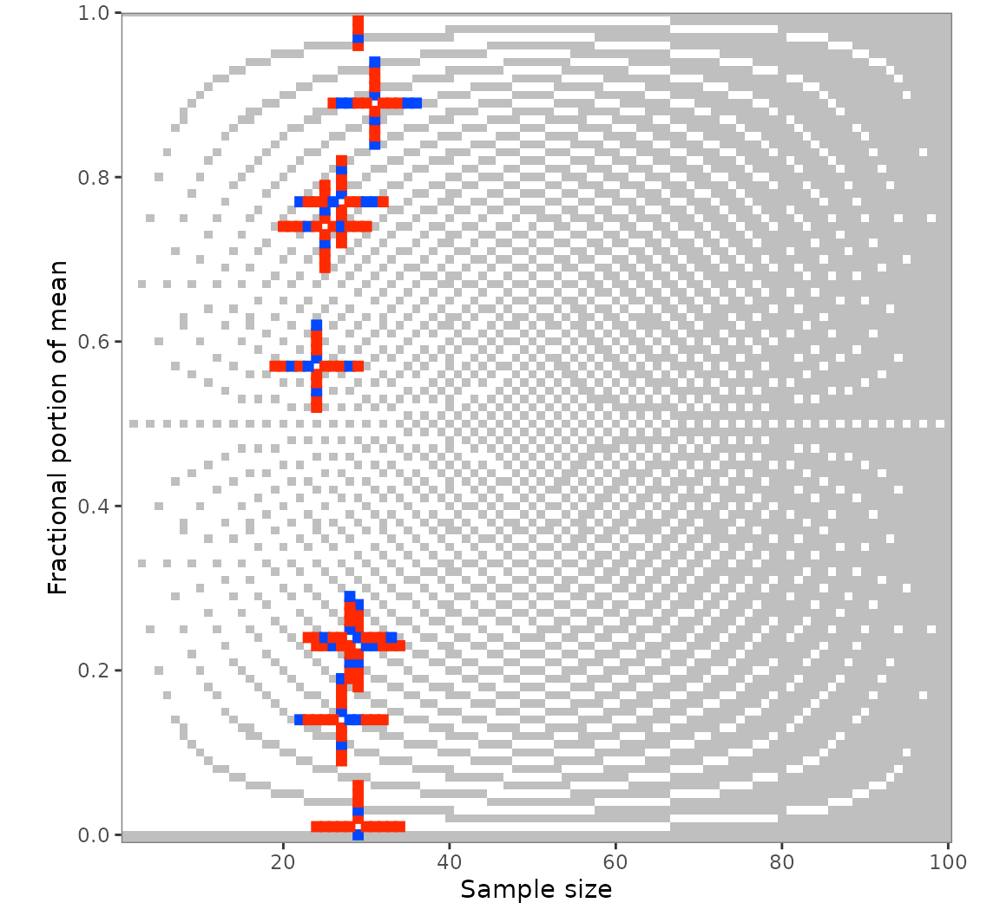
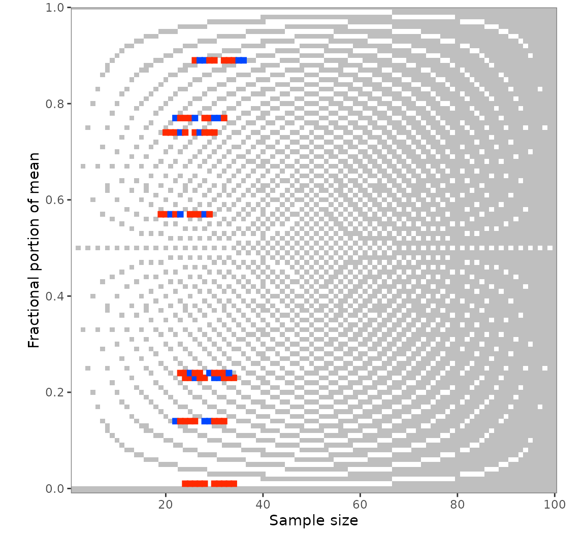
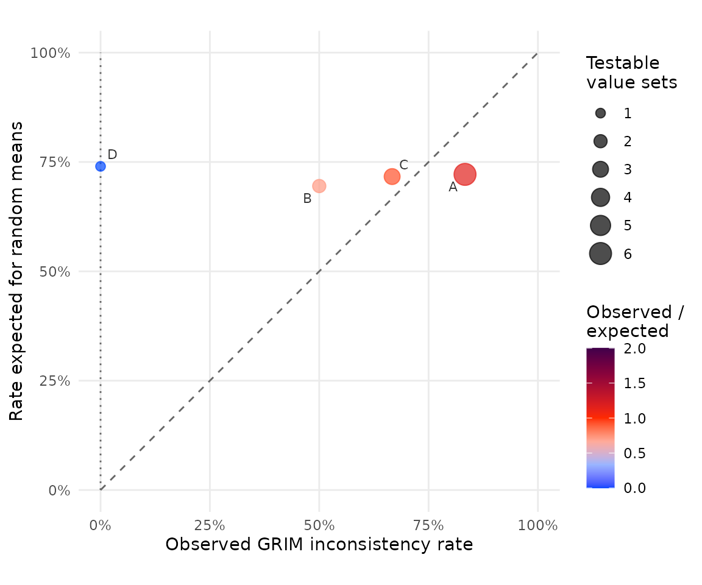

This vignette builds on vignette("grim"), which covers
the basics of GRIM testing with grim() and
grim_map(). Here are the numbers behind a test result, the
settings recorded with it, the values around the reported ones with
grim_map_seq() and grim_map_total_n(), and the
GRIM statistics behind the exp_incon column.
Behind a test result
Reconstructed values
With show_rec = TRUE, the output includes the numbers on
which the test result is based:
pigs1 |>
grim_map(digits_x = 2, items_averaged = 1, data_type = "integer", show_rec = TRUE) |>
dplyr::select(x, n, consistency, rec_sum:rec_x_lower)
#> # A tibble: 12 × 8
#> # GRIM: show_rec = TRUE
#> x n consistency rec_sum sum_lower sum_upper rec_x_upper rec_x_lower
#> <dbl> <int> <lgl> <dbl> <dbl> <dbl> <dbl> <dbl>
#> 1 7.22 32 TRUE 231.0 231 231 7.25 7.219
#> 2 4.74 25 FALSE 118.5 119 118 4.76 4.72
#> 3 5.23 29 FALSE 151.7 152 151 5.241 5.207
#> 4 2.57 24 FALSE 61.68 62 61 2.583 2.542
#> 5 6.77 27 FALSE 182.8 183 182 6.778 6.741
#> 6 2.68 28 TRUE 75.04 75 75 2.714 2.679
#> 7 7.01 29 FALSE 203.3 204 203 7.034 7
#> 8 7.38 26 TRUE 191.9 192 192 7.385 7.346
#> 9 3.14 27 FALSE 84.78 85 84 3.148 3.111
#> 10 6.89 31 FALSE 213.6 214 213 6.903 6.871
#> 11 5 25 TRUE 125 125 125 5 5
#> 12 0.24 28 FALSE 6.72 7 6 0.25 0.2143-
rec_sumisx * n * items_averaged, the sum implied by the reported mean. The sum of integer data is a whole number, whichrec_sumgenerally is not. -
sum_lowerandsum_upperare the smallest and largest whole-number sums that would have been reported asx. A value set is consistent if and only ifsum_lower <= sum_upper. If it is inconsistent, they are the whole numbers just above and belowrec_sum, so their difference is always 1 and says nothing about how far off the mean is. -
rec_x_upperandrec_x_lowerare the two achievable means closest tox:rec_sumrounded up and down, divided byn * items_averaged. They show how far the reported mean is from an achievable one. Withx_meaning = "percentage", they are percentages likex.
Recorded settings
A mapper records the settings of its call on its output, so that a
report can state the conditions of each result.
scrutiny_meta() returns them:
pigs1 |>
grim_map(digits_x = 2, items_averaged = 1, data_type = "integer", rounding = "up") |>
scrutiny_meta()
#> # A tibble: 5 × 4
#> setting value default added_by
#> <chr> <chr> <lgl> <chr>
#> 1 x_meaning 'mean' TRUE grim_map
#> 2 rounding 'up' FALSE grim_map
#> 3 threshold 5 TRUE grim_map
#> 4 symmetric FALSE TRUE grim_map
#> 5 show_rec FALSE TRUE grim_mapdefault says whether a setting was left at its default.
explain_map() and grim_plot_grid() read the
settings from there, so they apply the same rounding method as the call.
For the same reason, dplyr::bind_rows() refuses to combine
the output of calls with different settings, whose rows would otherwise
be read under the first call’s settings.
Achievable means
grim_values() returns all means that a sample of
n integers can have and that would be reported as
x, each with the whole-number sum behind it:
grim_values(x = 5.19, n = 32, digits_x = 2, items_averaged = 1, data_type = "integer")
#> # A tibble: 1 × 5
#> case x n items_averaged sum
#> <int> <dbl> <int> <int> <dbl>
#> 1 1 5.188 32 1 166
grim_values(x = 5.19, n = 300, digits_x = 2, items_averaged = 1, data_type = "integer")
#> # A tibble: 3 × 5
#> case x n items_averaged sum
#> <int> <dbl> <int> <int> <dbl>
#> 1 1 5.187 300 1 1556
#> 2 1 5.19 300 1 1557
#> 3 1 5.193 300 1 1558
grim_values(x = 5.19, n = 28, digits_x = 2, items_averaged = 1, data_type = "integer") # inconsistent: none
#> # A tibble: 0 × 5
#> # ℹ 5 variables: case <int>, x <dbl>, n <int>, items_averaged <int>, sum <dbl>grim_closest() returns the achievable mean nearest to
x, with the sum behind it, in one row per value set. If
x is consistent, that is the nearest one that would be
reported as x:
grim_closest(x = 5.19, n = 28, digits_x = 2, items_averaged = 1, data_type = "integer")
#> # A tibble: 1 × 5
#> case x n items_averaged sum
#> <int> <dbl> <int> <int> <dbl>
#> 1 1 5.179 28 1 145Both functions are vectorized. A reported mean may have one
achievable mean, several, or none, so grim_values() returns
one row per achievable mean, and case says which value set
it belongs to. An inconsistent value set has no rows:
grim_values(
x = c(5.19, 5.19, 5.19),
n = c(32, 300, 28),
digits_x = 2,
items_averaged = 1,
data_type = "integer"
)
#> # A tibble: 4 × 5
#> case x n items_averaged sum
#> <int> <dbl> <int> <int> <dbl>
#> 1 1 5.188 32 1 166
#> 2 2 5.187 300 1 1556
#> 3 2 5.19 300 1 1557
#> 4 2 5.193 300 1 1558To line the values up with the data they came from, number its rows
as case and join. An inner join leaves out the inconsistent
rows, and suffix keeps the achievable x apart
from the reported one:
pigs1 |>
dplyr::mutate(case = dplyr::row_number()) |>
dplyr::inner_join(
grim_values(pigs1$x, pigs1$n, digits_x = 2, items_averaged = 1, data_type = "integer"),
by = "case",
suffix = c("", "_achievable")
)
#> # A tibble: 4 × 7
#> x n case x_achievable n_achievable items_averaged sum
#> <dbl> <dbl> <int> <dbl> <int> <int> <dbl>
#> 1 7.22 32 1 7.219 32 1 231
#> 2 2.68 28 6 2.679 28 1 75
#> 3 7.38 26 8 7.385 26 1 192
#> 4 5 25 11 5 25 1 125Once n * items_averaged is at least
10^digits_x, every mean is achievable and GRIM cannot
detect anything. The number of achievable means can then become very
large, which is why grim_map() does not return them.
A single value set: grim_plot_line()
grim_plot_line() draws the test for one value set, which
helps to explain a result. Of all means that could have been reported
with digits_x decimal places, it draws a square for each
one that a sample of size n can have and leaves the others
out. The reported value is marked above the row, and the strip behind
the squares is the range of unrounded means that would have been
reported as x. The value set is consistent if a square
stands within the strip:
grim_plot_line(x = 5.19, n = 28, digits_x = 2, items_averaged = 1, data_type = "integer")
With n = 26, the same mean is consistent:
grim_plot_line(x = 5.19, n = 26, digits_x = 2, items_averaged = 1, data_type = "integer")
By default, the plot shows the reported value and the nearest
achievable one. zoom = "medium" widens it to the nearest
achievable value on either side, and zoom = "wide" to a
whole unit.
grimmer_plot_line() is the same figure over standard
deviations; see vignette("grimmer-in-depth").
The grid behind grim_plot_grid()
grim_grid() returns the grid behind the raster of
grim_plot_grid() as a tibble, with GRIM’s result for every
cell. It is useful for studying GRIM itself, e.g., the share of means it
rules out at each sample size:
grim_grid(digits_x = 2, data_type = "integer") |>
dplyr::summarise(share_inconsistent = mean(!consistency), .by = n)
#> # A tibble: 100 × 2
#> n share_inconsistent
#> <int> <dbl>
#> 1 1 1
#> 2 2 0.9899
#> 3 3 0.9798
#> 4 4 0.9697
#> 5 5 0.9596
#> 6 6 0.9495
#> 7 7 0.9394
#> 8 8 0.8889
#> 9 9 0.9192
#> 10 10 0.9091
#> # ℹ 90 more rowsValues around the reported ones: grim_map_seq()
An inconsistency may come from a small error in reporting or
computing. grim_map_seq() varies x and
n a few steps up and down, one at a time, and tests each
resulting value set:
out_seq1 <- grim_map_seq(pigs1, digits_x = 2, items_averaged = 1, data_type = "integer")
out_seq1
#> # A tibble: 160 × 10
#> # GRIM: default settings
#> x n items_averaged data_type digits_x consistency exp_incon diff_var
#> <dbl> <int> <int> <chr> <int> <lgl> <dbl> <int>
#> 1 4.69 25 1 integer 2 FALSE 0.75 -5
#> 2 4.7 25 1 integer 2 FALSE 0.75 -4
#> 3 4.71 25 1 integer 2 FALSE 0.75 -3
#> 4 4.72 25 1 integer 2 TRUE 0.75 -2
#> 5 4.73 25 1 integer 2 FALSE 0.75 -1
#> 6 4.75 25 1 integer 2 FALSE 0.75 1
#> 7 4.76 25 1 integer 2 TRUE 0.75 2
#> 8 4.77 25 1 integer 2 FALSE 0.75 3
#> 9 4.78 25 1 integer 2 FALSE 0.75 4
#> 10 4.79 25 1 integer 2 FALSE 0.75 5
#> # ℹ 150 more rows
#> # ℹ 2 more variables: case <int>, var <chr>By default, only inconsistent value sets are dispersed.
case is the row in the input data, var the
variable that was varied, and diff_var the number of steps
from the reported value.
Summaries with audit()
audit() summarizes this output per case:
audit(out_seq1)
#> # A tibble: 8 × 14
#> x n items_averaged data_type consistency hits_total hits_x hits_n
#> <dbl> <int> <int> <chr> <lgl> <int> <int> <int>
#> 1 4.74 25 1 integer FALSE 4 2 2
#> 2 5.23 29 1 integer FALSE 6 3 3
#> 3 2.57 24 1 integer FALSE 6 3 3
#> 4 6.77 27 1 integer FALSE 7 3 4
#> 5 7.01 29 1 integer FALSE 3 3 0
#> 6 3.14 27 1 integer FALSE 6 3 3
#> 7 6.89 31 1 integer FALSE 8 4 4
#> 8 0.24 28 1 integer FALSE 6 3 3
#> # ℹ 6 more variables: diff_x <int>, diff_x_up <int>, diff_x_down <int>,
#> # diff_n <int>, diff_n_up <int>, diff_n_down <int>-
xandnare the reported values, andconsistencytheir test result. -
hits_total,hits_x,hits_n: the number of consistent value sets found, in total and by varying each variable. -
diff_x: the distance fromxto the nearest consistent value, in dispersion steps.diff_x_upanddiff_x_downare the distances to the nearest consistent value above and below. Thediff_n*columns are the same forn.
The default dispersion is 1:5, for five
steps up and down. With more steps, more hits are typically found:
out_seq2 <- grim_map_seq(
pigs1,
digits_x = 2,
items_averaged = 1,
data_type = "integer",
dispersion = 1:10
)
audit(out_seq2)
#> # A tibble: 8 × 14
#> x n items_averaged data_type consistency hits_total hits_x hits_n
#> <dbl> <int> <int> <chr> <lgl> <int> <int> <int>
#> 1 4.74 25 1 integer FALSE 12 6 6
#> 2 5.23 29 1 integer FALSE 12 6 6
#> 3 2.57 24 1 integer FALSE 11 6 5
#> 4 6.77 27 1 integer FALSE 11 6 5
#> 5 7.01 29 1 integer FALSE 6 6 0
#> 6 3.14 27 1 integer FALSE 13 6 7
#> 7 6.89 31 1 integer FALSE 12 6 6
#> 8 0.24 28 1 integer FALSE 13 6 7
#> # ℹ 6 more variables: diff_x <int>, diff_x_up <int>, diff_x_down <int>,
#> # diff_n <int>, diff_n_up <int>, diff_n_down <int>explain_print() explains the rows of this output like
those of grim_map(), so you can see why a nearby value
passes:
out_seq1 |>
dplyr::filter(consistency) |>
explain_print(1)
#> GRIM test: x = 4.72, n = 25, items_averaged = 1, data_type = "integer"
#>
#> The mean was reported as 4.72, with 2 decimal places. Before rounding (assuming
#> either rounding up from 5 or down from 5), it could have been anything from
#> 4.715 to 4.725.
#>
#> The mean of 25 integers is their sum divided by 25. So the sum must be from
#> 4.715 * 25 = 117.875 to 4.725 * 25 = 118.125.
#>
#> A sum of integers is itself an integer, and 118 is in this range:
#> 118 / 25 = 4.72, which rounds to 4.72.
#>
#> ==> ConsistentPlotting dispersed values
grim_plot_grid() accepts this output. Each reported
value set appears as a cross: the horizontal arm consists of the
dispersed n values, the vertical arm of the dispersed
x values:
grim_plot_grid(out_seq1)
Restrict the dispersion to one variable with var:
out_seq1_only_n <- grim_map_seq(
pigs1,
digits_x = 2,
items_averaged = 1,
data_type = "integer",
var = "n"
)
grim_plot_grid(out_seq1_only_n)
Unknown group sizes: grim_map_total_n()
Some studies report group means but only the total sample size. GRIM
can then test hypothetical group sizes: start from an even split, move
one participant at a time from one group to the other, and record which
splits make both means consistent. grim_map_total_n() does
this, following an analysis by Bauer and Francis
(2021).
The study they examined reported means of 4.71 and 5.3 for a total of 40 participants. With 20 in each group, only 5.3 is consistent. Bauer and Francis moved to 19/21, 18/22, and 17/23, and found that both means are consistent at 17/23 with 4.71 in the smaller group.
df <- tibble::tibble(x1 = 4.71, x2 = 5.3, n = 40)
df_tested <- grim_map_total_n(df, digits_x = c(2, 1), items_averaged = 1, data_type = "integer")
df_tested
#> # A tibble: 22 × 11
#> # GRIM: default settings
#> x n n_change items_averaged data_type digits_x consistency
#> <dbl> <int> <int> <int> <chr> <int> <lgl>
#> 1 4.71 20 0 1 integer 2 FALSE
#> 2 5.3 20 0 1 integer 1 TRUE
#> 3 4.71 19 -1 1 integer 2 FALSE
#> 4 5.3 21 1 1 integer 1 TRUE
#> 5 4.71 18 -2 1 integer 2 FALSE
#> 6 5.3 22 2 1 integer 1 TRUE
#> 7 4.71 17 -3 1 integer 2 TRUE
#> 8 5.3 23 3 1 integer 1 TRUE
#> 9 4.71 16 -4 1 integer 2 FALSE
#> 10 5.3 24 4 1 integer 1 TRUE
#> # ℹ 12 more rows
#> # ℹ 4 more variables: both_consistent <lgl>, exp_incon <dbl>, case <int>,
#> # dir <fct>
audit(df_tested)
#> # A tibble: 1 × 8
#> x1 x2 n hits_total hits_forth hits_back scenarios_total hit_rate
#> <dbl> <dbl> <int> <int> <int> <int> <int> <dbl>
#> 1 4.71 5.3 40 3 1 2 11 0.2727Each row is one mean with one hypothetical group size.
n_change is how far that size is from half the total,
both_consistent says whether both means of the split are
consistent, and dir says which way the means were paired
with the groups (see below). A hit is a split in which both means are
consistent with their hypothetical group sizes. The default
dispersion = 0:5 goes five steps away from the even
split.
The two means were reported with different numbers of decimal places,
so digits_x has one value per group. Testing 5.3 as if it
were 5.30 would be stricter than the test Bauer and Francis
conducted.
grim_map_total_n() tests both ways of pairing the means
with the group sizes. Bauer and Francis only paired 4.71 with the
smaller group; the reverse pairing yields two more hits, at 19/21 and
16/24. In the summary, hits_forth counts the hits from the
first pairing, hits_back those from the reverse one, and
hits_total their sum. scenarios_total is the
number of scenarios tested, each a split with one pairing of the means,
and hit_rate the share of them that are hits. The even
split is the same scenario under both pairings, so it counts once: six
splits make 11 scenarios here.
GRIM statistics
The probability of GRIM inconsistency
The exp_incon column of grim_map() is, for
the simplest rounding methods,
where is the number of decimal places, the sample size, and the number of items. This is the probability that a mean with decimal places but random decimal digits is GRIM-inconsistent with and . If it is 0, GRIM cannot detect any inconsistency.
The formula is exact for rounding methods in which exactly one range
of unrounded values, one rounding step wide, is rounded to each reported
value, such as "up". The default,
"up_or_down", accepts a mean exactly halfway between two
reportable values in both directions, so the formula overstates the
probability whenever
and
is even: at
with two decimal places, the probability is
,
not
.
Under "ceiling_or_floor", the range is two steps wide.
grim_exp_incon() and grim_total() therefore
take rounding and threshold arguments and
count exactly the values that grim() would reject.
grim_map() passes its own rounding on.
grim_exp_incon(x = 1.40, n = 72, digits_x = 2, items_averaged = 1, data_type = "integer")
#> [1] 0.24
grim_exp_incon(x = 5.93, n = 80, digits_x = 2, items_averaged = 3, data_type = "integer")
#> [1] 0
grim_exp_incon(
x = 84.27,
n = 40,
digits_x = 2,
items_averaged = 1,
data_type = "integer",
x_meaning = "percentage"
)
#> [1] 0.996grim_total() returns a count instead of a proportion:
the number of the
possible fractional parts that are inconsistent:
grim_total(x = 1.40, n = 72, digits_x = 2, items_averaged = 1, data_type = "integer")
#> [1] 24The formula is implicit in Brown and Heathers (2017), who note (p. 367) that with two decimal places and , a random mean is consistent in about % of cases.
A study’s rate of inconsistency
Correctly reported means are always consistent, so a study’s rate of
inconsistent value sets should be zero. If the decimal digits of its
means were random, that rate would be expected to be the mean of the
exp_incon column. grim_binomial() tests
whether the rate of consistent value sets is above what random
digits would produce. It uses the Poisson binomial distribution, since
the probability differs between value sets, and returns the observed
consistency rate with a Clopper-Pearson confidence interval:
pigs1 |>
grim_map(digits_x = 2, items_averaged = 1, data_type = "integer") |>
grim_binomial()
#> # A tibble: 1 × 9
#> estimate statistic p.value parameter conf.low conf.high conf.level method
#> <dbl> <int> <dbl> <int> <dbl> <dbl> <dbl> <chr>
#> 1 0.3333 4 0.4531 12 0.1229 1 0.95 Poisson bi…
#> # ℹ 1 more variable: alternative <chr>grim_binomial_power() computes the power of this test
for a given number of value sets, so you can judge whether the test is
informative before interpreting its p-value:
grim_binomial_power(p0 = 0.5, p1 = 0.9, k = 10)
#> [1] 0.7360989Both functions are experimental. grim_plot_rates() shows
the same comparison for several studies. Each point is a study, placed
at its observed rate of inconsistency against the rate that random means
would show; the point area is the number of testable value sets. A study
on the dotted line at zero is as expected, and one on the dashed
diagonal is as inconsistent as random digits:
# fmt: skip
codes <- c(
"B", "B", "C", "C", "A", "C",
"A", "D", "A", "A", "A", "A"
)
pigs1 |>
grim_map(digits_x = 2, items_averaged = 1, data_type = "integer") |>
dplyr::mutate(study = codes) |>
grim_plot_rates(study)
Granularity
The granularity of a scale is the smallest difference between two
means it can produce,
.
grim_granularity() computes it:
grim_granularity(n = 80, items_averaged = 5)
#> [1] 0.0025